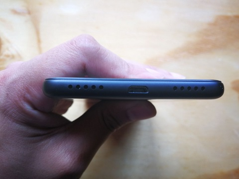

Besar, itulah kesan pertama saya ketika memegang Xiaomi Redmi 5. Layarnya berukuran 5,7 inci dengan rasio layar ke bodi mencapai 75 persen, cukup besar di kelasnya. Xiaomi Redmi 5 juga mulai mengadopsi konsep bezel-less yang minimal.
Desainnya memang tidak seperti ponsel di kelas ekonomis. Selain dari ukuran layar, Xiaomi juga ingin membuktikan hal itu dari berbagai sisi. Contohnya, sisi belakang yang memperlihatkan desain khas Xiaomi: kamera belakang menonjol di tengah dengan pemindai sidik jari melingkar.
Xiaomi tetap memasang kamera belakang ini dalam posisi yang tidak sejajar sehingga ketika Anda meletakkan ponsel di meja, ia akan terlihat miring. Sisis belakang ini juga memperlihatkan dua gari antena atas dan bawah, yang memberi kesan sisi ini menggunakan penutup yang bisa dilepas. Bodi Xiaomi Redmi 5 berlapis bahan matte, mampu memberikan grip yang lebih baik saat dipegang dengan satu tangan. Ini juga berlaku ketika tangan dalam keadaan berkeringan. Harus saya akui, material plastik berlapis matte ini tidak mempunyai kualitas yang kurang bagus. Unit pengujian yang kami terima mengalami lecet yang tidak bisa dihapus.
Padahal, gesekan terhadap benda tumpul tidak terlalu kencang. Lapisan ini justru lebih sulit dibersihkan dibanding lapisan sama yang berada di produk pesaing. Selain itu, kamera yang menonjol membuatnya mudah bergesekkan dengan benda lain, sehingga lapisan matte ini mudah rusak. Terkait antarmuka, Xiaomi Redmi 5 menyematkan tombol yang telah menyatu dengan layar. Slot kartu SIM berada di sisi kiri, yang terdiri dari satu slot SIM dan kartu MicroSD hibrida. Tombol power dan volume terpasang di sisi kanan, sementara jack audio 3,5mm berada di sisi atas. Smartphone ini masih mengadopsi port Micro USB, ya
Antarmuka dan SoftwareXiaomi Redmi 5 mengadopsi MIUI 9, dengan basis Android 7.1.2 Nougat. Xiaomi menerapkan beberapa perubahan desain terhadap aplikasi bawaan, seperti peramban dan pengirim pesan. Desain ikon baru ini membuatnya terlihat seperti antarmuka Android standar. Elemen warna yang dipakai juga lebih kalem, sehingga unsur pencahayaan ponsel tidak terlalu menyilaukan. Secara keseluruhan, antarmuka ini sangat ringan, dan saya melihat perbedaannya karena saya sendiri adalah pengguna beberapa seri Xiaomi. Antarmuka mandiri Xiaomi ini juga menawarkan beberapa fitur canggih yang belum tentu dimiliki ponsel lain dengan versi Android yang sama, seperti dukungan multitasking. Sesuai namanya, Anda bisa mengoperasikan dua aplikasi sekaligus dalam satu layar. Caranya memang cukup mudah, yaitu menekan tombol recent apps sekitar dua detik, kemudian menentukan aplikasi kedua yang ingin dijalankan.
Perlu diingat bahwa tidak semua aplikasi yang Anda pasang telah mendukung fitur tersebut. Beberapa aplikasi ini mewajibkan Anda menjalankannya dengan satu layar penuh, sehingga tidak akan bisa berjalan dengan aplikasi lainnya. Keamanan merupakan salah satu aspek yang ditekankan MIUI 9 pada Xiaomi Redmi 5. Selain mengunci ponsel dengan password, pattern, dan sidik jari, Anda juga bisa membatasi akses beberapa aplikasi dengan password. Contohnya, untuk membuka aplikasi Facebook atau galeri foto, Anda harus memasukkan kata kunci. Kembali lagi, tidak semua aplikasi menduung penguncian khusus. Fitur App Lock akan mendeteksi aplikasi yang terpasang secara otomatis, dan menampilkannya dalam daftar berbeda. Saya cukup terkejut dengan aplikasi bawaan dari pihak ketiga yang sekarang lebih sedikit. MIUI 9 pada Redmi 5 tidak mempunyai aplikasi pihak ketiga yang berlebihan. Xiaomi hanya membawa Facebook, Caping, dan PicMix. Ada juga aplikasi bawaan internal Xiaomi, seperti Mi Remote untuk mengendalikan televisi atau perangkat lain yang mendukung inframerah. Ada juga aplikasi Mi Community untuk pengguna yang telah menjadi anggota atau baru tertarik mencoba. Mi Community disesuaikan dengan wilayah pemasaran, sehingga tampilan bahasanya otomatis langsung ke bahasa Indonesia. Aplikasi yang cukup esensial adalah Mi Drop yang bisa berbagai data antar pengguna secara cepat.
Kamera dan VideoXiaomi menanamkan kamera dengan resolusi 12MP dengan aperture f/2.2 pada Redmi 5. Meskipun resolusi dari kamera ini tidak terlalu besar, gambar yang dihasilkan menggunakan kamera ini sudah cukup tajam jika digunakan untuk mengambil foto di tempat dengan pencahayaan yang memadai. Gambar yang dihasilkan ketika digunakan untuk mengambil foto di siang hari cukup tajam dengan warna yang cukup akurat dan mendetail. Untuk mengambil gambar makro, ponsel ini juga bisa diandalakan, meski Anda mungkin tidak bisa mencoba untuk mengambil gambar dengan efek Bokeh. Kamera Xiaomi Redmi 5 juga cukup responsif. Ponsel ini dilengkapi dengan cukup banyak mode seperti panorama, manual dan HHT.
Sayangnya, seperti kebanyakan smartphone kelas pemula, hasil foto dari Xiaomi Mi 5 di malam hari memang kurang maksimal. Meskipun begitu, jika dibandingkan dengan hasil jepretan ponsel lain dengan harga yang sama, foto dari Mi 5 jauh lebih baik.
Untuk masalah kamera depan, Xiaomi memasang kamera 5MP. Gambar yang dihasilkan cukup baik dengan warna manis meski kontras agak tinggi. Tentu saja, Xiaomi juga melengkapi Redmi 5 dengan beauty mode. Hasil foto yang dihasilkan menggunakan beauty mode juga cukup baik. Selain auto mode, Anda juga bisa menyesuaikan perubahan pada foto selfie Anda. Namun, jika tidak hati-hati, foto yang dihasilkan justru bisa terlihat aneh
Ketika hendak mengambil foto selfie, Redmi 5 juga bisa mendeteksi gender dan umur Anda. Sayangnya, ketika saya mencobanya, perkiraan umur yang dihasilkan oleh ponsel ini jauh dari akurat.
PerformaUntuk performa, Xiaomi Redmi 5 termasuk salah satu yang terbaik di kelasnya. Saya tidak hanya membicarakan performa melalui aplikasi benchmark seperti yang biasa Medcom.id lakukan, tetapi juga perbandingan performa dengan harga yang ditawarkan. Xiaomi Redmi 5 mengadopsi prosesor Snapdragon 450 yang berduet RAM 2GB dan memori internal 16GB. Snapdragon 450 merupakan prosesor mobile generasi terbaru yang diklaim lebih efisien.
Sepanjang pengujian dengan aplikasi benchmark, smartphone ini ternyata tidak menghasilkan panas yang berarti, begitu juga saat bermain game yang memerlukan pengaturan grafis kelas berat dan koneksi internet yang konsisten. Seperti biasa, kami menjajalnya dengan Asphalt 8: Airborne. Bisa memainkannya dengan pengaturan grafis tertinggi, pengalaman bermain memang lebih baik saat Anda menggunakan setting Medium.
KesimpulanXiaomi Redmi 5 layak menjadi salah satu pertimbangan konsumen ketika mereka mencari smartphone dengan harga kurang dari Rp2 juta. Terlepas dari lapisan materialnya yang kurang bagus, desainnya yang tidak kalah dengan ponsel di kelas menengah bisa memberikan rasa percaya diri kepada penggunanya. Selain itu, kualitas kamera yang ditawarkan juga termasuk yang bagus. Performa yang ditawarkan juga tidak kalah menarik, tak lupa dengan daya tahan baterai yang cukup lama.